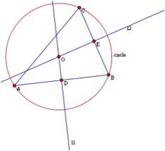
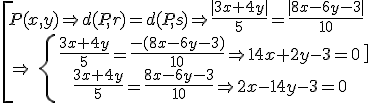
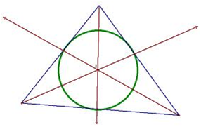
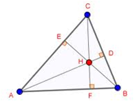
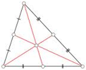
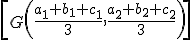

La mediatriz en un triángulo es la mediatriz de sus lados. Las tres mediatrices de un triángulo convergen en un punto llamado circuncentro, el centro de la circunferencia circunscrita al triángulo.

Una bisectriz es el lugar geométrico de los puntos que equidistan de dos lados. También es la recta que divide el ángulo en dos.
Por ejemplo, si dos lados de un triángulo son r: 3x+ 4y = 0 y s:8x – 6y – 3 = 0, entonces:

Las tres bisectrices de un triángulo convergen en un punto llamado incentro, el centro de la circunferencia inscrita al triángulo.

Una altura es la recta que pasa por un vértice y es perpendicular al lado opuesto.
Las tres alturas de un triángulo convergen en un punto llamado ortocentro.

Una mediana es la recta que conecta un vértice con el punto medio del lado opuesto. Las tres medianas convergen en un punto llamado baricentro, que es el centro de masas.

Se puede comprobar que las coordenadas del baricentro del triángulo cuyos vértices son A(a1,a2), B(b1,b2) y C(c1,c2), son:

Tres de estos puntos notables se encuentran alineados en la denominada recta de Euler. Más información en: https://www.victormat.es/recta_de_euler.html
Ejercicios
1.- Encuentra la bisectriz del ángulo que forman las rectas 3x - 4y + 10 = 0 y 5x - 12y -2 = 0
2.- Averigua la ecuación de la recta de Euler del triángulo que forman los puntos (-5,2), (4,7) y (6,-3).
Soluciones: 1) x - 8y + 10 = 0, 8x + y +15 = 0; 2) 111 x - 55y - 75 = 0